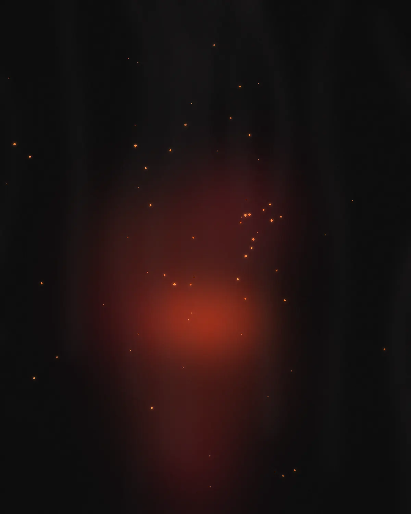
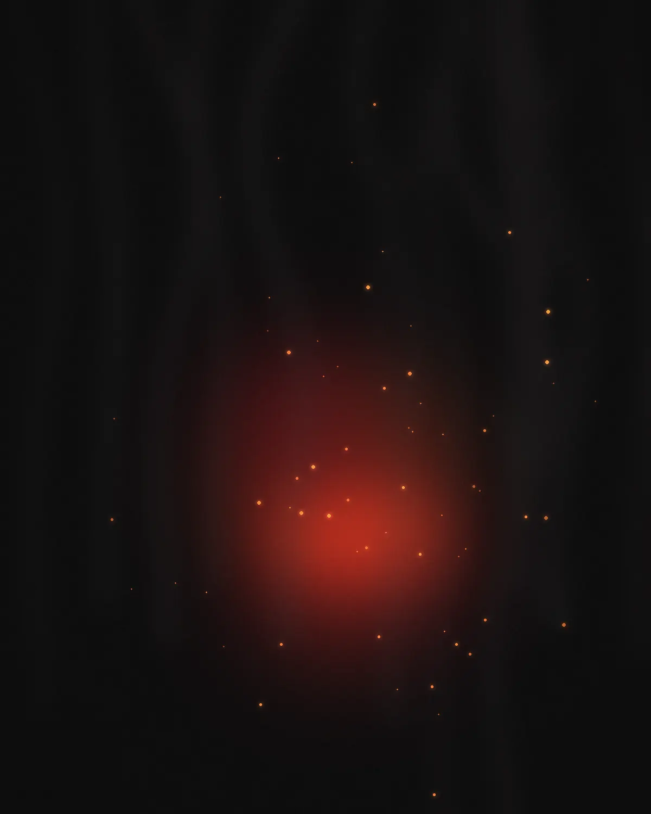
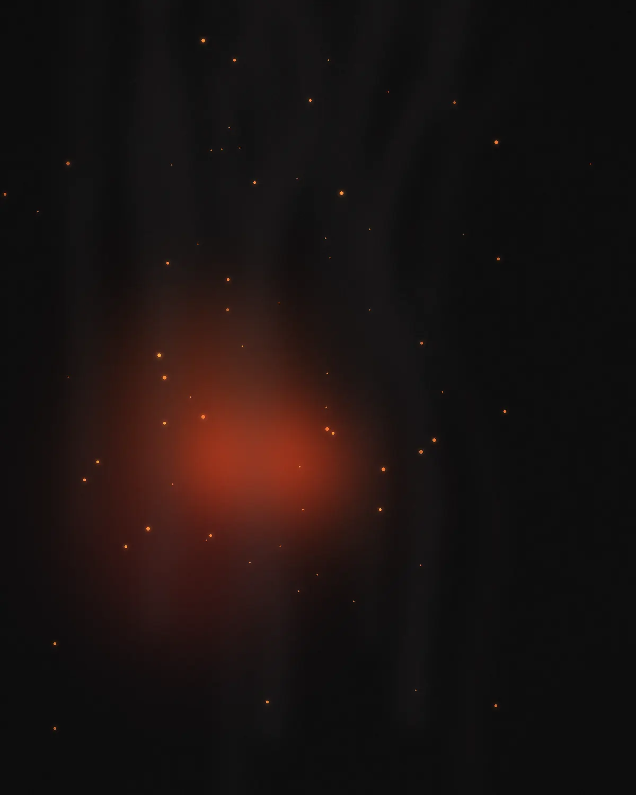
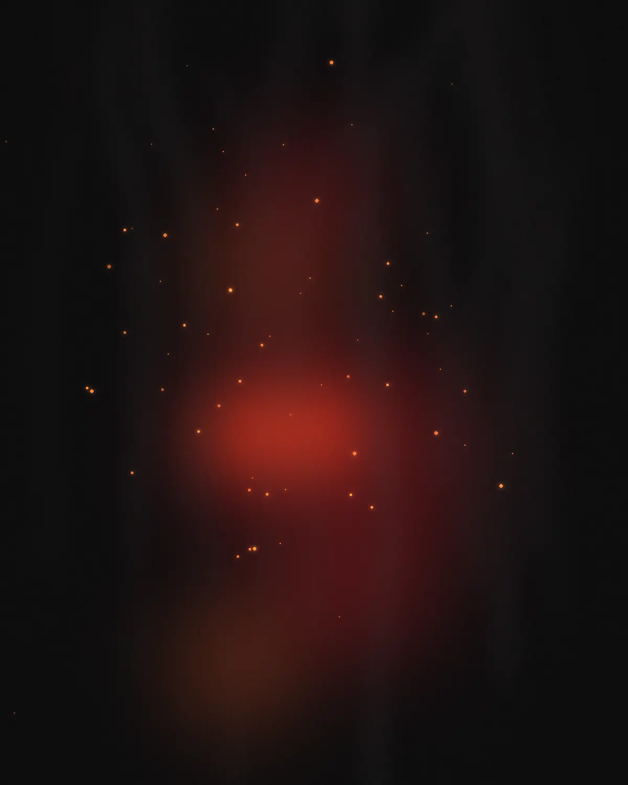
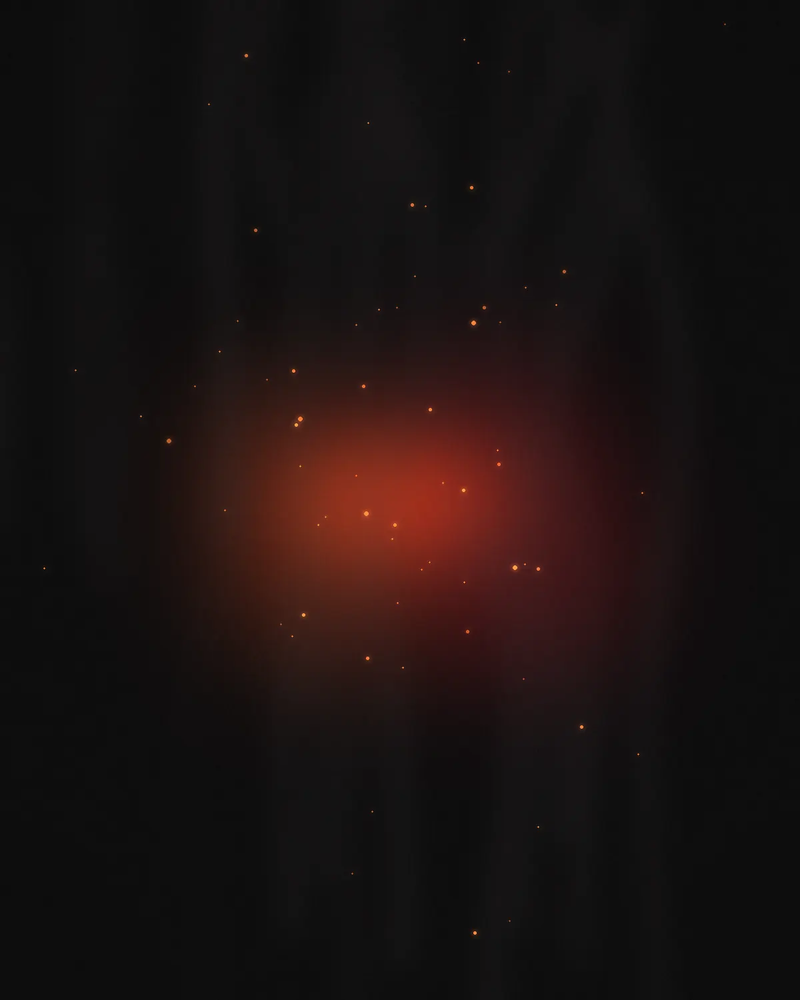

American Grill · Parque Leloir
Leña encendida, platos gigantes, mesas largas.
Parrilla americana en Thays Parque Leloir. Techos altos, madera y mármol, y una carta hecha para compartir en familia.
La casa
En Parque Leloir, Kansas ocupa un salón enorme de techos altos, madera, mármol y verde. El rib eye sale de la leña, las costillas se cocinan a fuego lento y los platos llegan tan grandes que dan ganas de compartirlos con toda la mesa.
Platos firma
Seis razones para volver.
-
01
Rib Eye Steak 400 g
Ojo de bife grillado a la leña, con papas fritas

-
02
Houston Barbecue Ribs 500 g
Costillar de cerdo a fuego lento con salsa barbacoa

-
03
Chicago Style Spinach Dip
Dip de espinaca y queso con tortilla chips · Favorito

-
04
Potato Skins
Cáscaras de papa con queso, panceta y cebollines

-
05
Going Bananas
Postre

-
06
Apple Nut Cobbler
Postre

Puntuación en Google
Reseñas de comensales
Rib eye a la leña
Houston Barbecue Ribs
Lo que dicen
Reseñas
4,6/ 5 en Google · 6.000+ opiniones
“Un lugar que nunca falla si quieres comer bien y abundante.”
“Nos sorprendimos por lo bello y enorme que es el lugar.”
“Techos altos y platos gigantes: nada puede ser mejor.”
“Ideal para compartir con la familia.”
Frases adaptadas de una reseña pública de @foodfinders en TikTok.
Visítanos
Martín Fierro 3351
- Dónde
- Thays Parque Leloir, plaza gastronómica
- Zona
- Villa Udaondo, Ituzaingó · B1715
- Cocina
- Americana · Grill a la leña
- Pedidos
- Delivery a través de Rappi